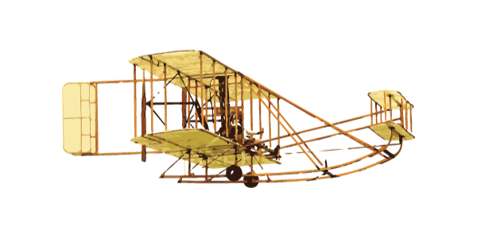
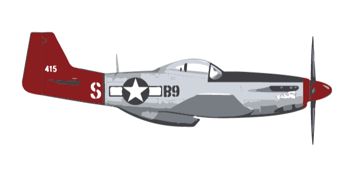
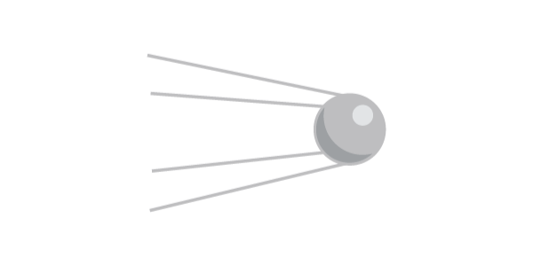
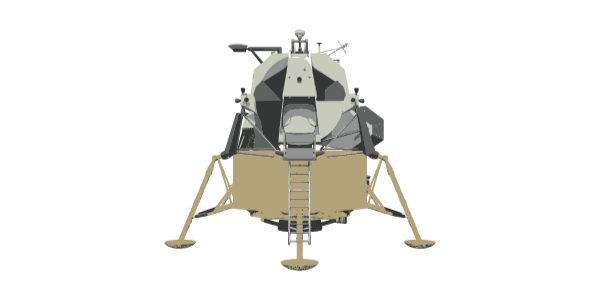
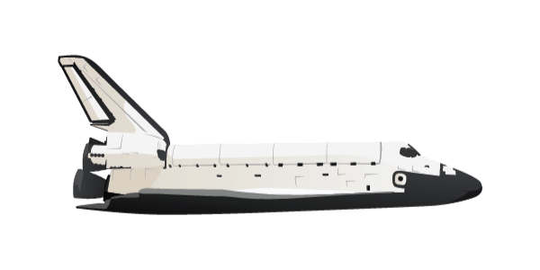
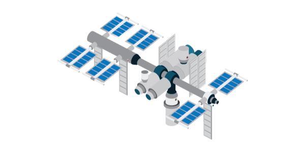
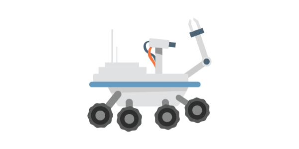

The history of aviation has had a profound impact on present day life, and we’d like for you to join us on a tour through the last century (or
more) of monumental flights and milestones that set the stage for the many breakthroughs yet to come.
Scroll Right to see a collection of the most lasting memories, or click on a year below to jump ahead.

Wright Brothers
Man was not made to fly until December 17, 1903. The Wright Brothers were the first to discover a new world of possibilities, but not it’s full potential.
Spirit of St. Louis
As time went on, more boundaries were pushed. Charles Lindbergh piloted the first transatlantic flight. But over the years, it became clear that travel was only one benefit of a plane.

p-51 Mustang
WWII broke out and the skies were filled with dogfights, a close range tactic that challenged the skills of even the bravest pilot. However, in the beginning of the Cold War, there came hope of a new boundary to be crossed.

Sputnik 1
Sputnik 1, a Russian satellite, was the first spacecraft to orbit the Earth and propel us into a new frontier, space.

Apollo Series
Now, coming from a background of pioneers, Americans wanted to be the first to have a man on the moon. And like those pioneers, we were successful.

Space Shuttle
As space exploration expanded, America wanted a better way to, not only reach space, but navigate the last great frontier.

Space Station
At this time, we have the international space station. It’s used to study the effects of long-term space flight on the human body.

Mars Rover
And Earth isn't the only planet we've been studying. The Mars Rover is letting us know that life on Mars is becoming closer to fact than fiction.
Start
Welcome
The history of aviation has had a profound
impact on present day life, and we’d like for you to join us on a tour through the last century (or
more) of monumental flights and milestones that set the stage for the many breakthroughs yet to come.
Scroll Right to see a collection of the most lasting memories, or click on a year below to jump ahead.
Wright Bros
Man was not made to fly until December 17, 1903. The Wright Brothers were the first to discover a new world of possibilities, but not it’s full potential.
Spirit STL
As time went on, more boundaries were pushed. Charles Lindbergh piloted the first transatlantic flight. But over the years, it became clear that travel was only one benefit of a plane.
Mustang
WWII broke out and the skies were filled with dogfights, a close range tactic that challenged the skills of even the bravest pilot. However, in the beginning of the Cold War, there came hope of a new boundary to be crossed.
Sputnik
Sputnik 1, a Russian satellite, was the first spacecraft to orbit the Earth and propel us into a new frontier, space.
Apollo Lander
Now, coming from a background of pioneers, Americans wanted to be the first to have a man on the moon. And like those pioneers, we were successful.
Space Shuttle
As space exploration expanded, America wanted a better way to, not only reach space, but navigate the last great frontier.
Space Station
At this time, we have the international space station. It’s used to study the effects of long-term space flight on the human body.
Mars Lander
And Earth isn't the only planet we've been studying. The Mars Rover is letting us know that life on Mars is becoming closer to fact than fiction.
Museum
But today, it’s your responsibility to carry on the possibilities of the human race. Like so many before you, prove limits are supposed to be pushed and boundaries are meant to be crossed.